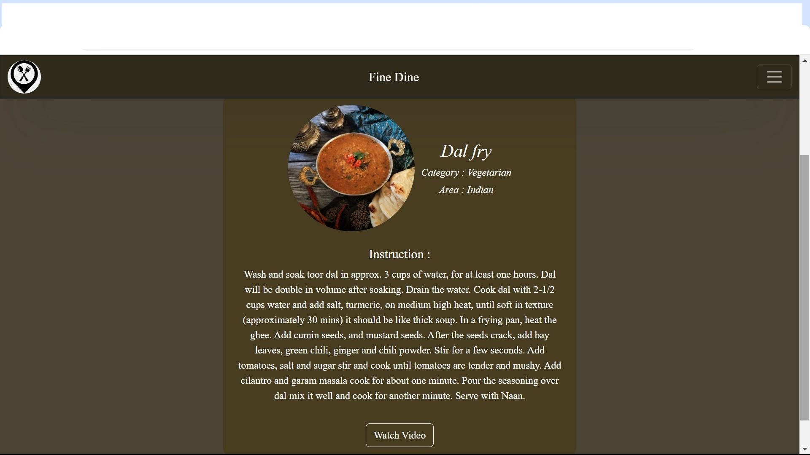
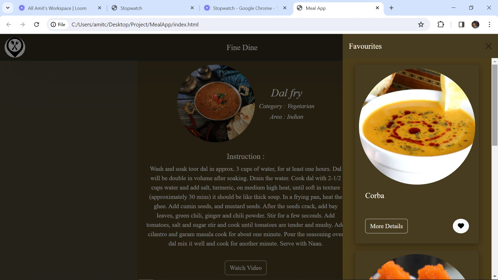

Introduction:
This is a simple Meal application built using pure HTML, Javascript and CSS.
Description:
The main feature of this application is to search for food recipe using the Themealdb API. The API returns a variety of data related to the searched recipe, such as ingredients, instructions, and nutritional information. The app then displays this information in an easy-to-read format, allowing users to quickly find the recipe they are looking for. The application also include the ability to see the more details regarding the dishes and can see the youtube video of how to create that dish.Users can also mark the dish as a favourite dish. Once dish is marked as favourite, it gets into favourite list in the favourite section. User can see all the favourite dishes and can remove particular dish from the favourite list.
Funcationality:
- Search Meal by name
- Auto sugestion on pressed keyword
- Save favrouite meals for future use
- Ability to restore saved meals even after reopening the browser
- Works seamlessly on both mobile and desktop devices
- Link to video
When user type in searchbox, mealdb API response is presented to user in user friendly card layout. Here we can see image of dish, name, more details button and like button. Clicking on more details redirect us to new page which contain more details of dish such as category, region or country name to which dish belong, more information about dish and watch video button. Watch video button is linked to youtube where user can find recipe of dish. If user clicks on like button then dish will be saved in favourite section. Sidebar contain favourite section which shows all dishes marked as favourite. This section is saved even if browser is closed and re-opened.
Image:

